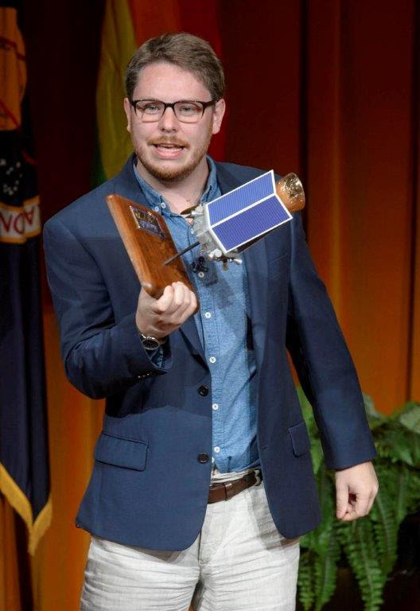
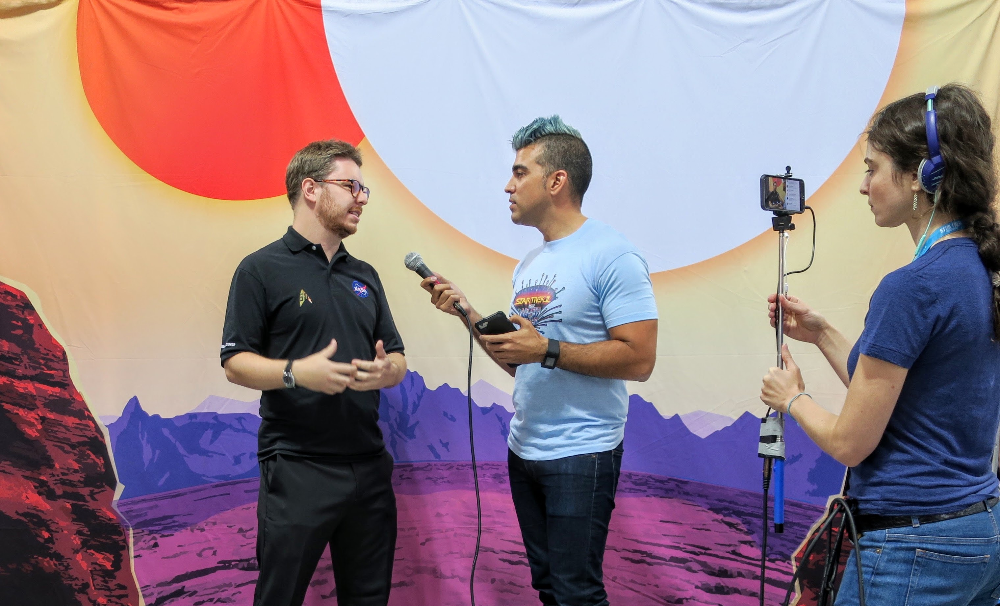

I study stars orbiting other planets and I run the observing program for NASA's Kepler and K2 Mission. I've been part of teams that discovered more than 700 exoplanets and have lead the discovery of five exoplanets. I hold the record discovery of the smallest known planet, I discovered the first super-Earth-sized planet orbiting in the habitable zone of a Sun-like star, and I was part of the team who found the first Earth-sized planet in the habitable zone of another star.

Science Highlights
My research involves three interweaving strands: detection and characterization of exoplanets, statistical methods in astronomy, modeling the formation of terrestrial planets. Here are a few highlights amongth the nearly 100 publications I have authored.
-
Discovering the smallest planet
In 2013 I led paper published in Nature announcing the detection of a planet smaller than Mercury. This remains the smallest known planet orbiting any star.
-
Modeling the terrestrial free-floating planet popultion
I simualtion how planets formed and in this work looked at what is ejected during planet formation. I predict that the are very free-floating earths but lots of free-floating mars-mass planets. There's a space.com article about it.
-
The first Earth-sized habitable-zone planet
Sed lorem amet ipsum dolor et amet nullam consequat a feugiat consequat tempus veroeros sed consequat.
-
5,120 Etiam
-
8,192 Magna
-
2,048 Tempus
-
4,096 Aliquam
-
1,024 Nullam
Nam elementum nisl et mi a commodo porttitor. Morbi sit amet nisl eu arcu faucibus hendrerit vel a risus. Nam a orci mi, elementum ac arcu sit amet, fermentum pellentesque et purus. Integer maximus varius lorem, sed convallis diam accumsan sed. Etiam porttitor placerat sapien, sed eleifend a enim pulvinar faucibus semper quis ut arcu. Ut non nisl a mollis est efficitur vestibulum. Integer eget purus nec nulla mattis et accumsan ut magna libero. Morbi auctor iaculis porttitor. Sed ut magna ac risus et hendrerit scelerisque. Praesent eleifend lacus in lectus aliquam porta. Cras eu ornare dui curabitur lacinia.
Fringilla nisl. Donec accumsan interdum nisi, quis tincidunt felis sagittis eget. tempus euismod. Vestibulum ante ipsum primis in faucibus vestibulum. Blandit adipiscing eu felis iaculis volutpat ac adipiscing accumsan eu faucibus. Integer ac pellentesque praesent tincidunt felis sagittis eget. tempus euismod. Vestibulum ante ipsum primis in faucibus vestibulum. Blandit adipiscing eu felis iaculis volutpat ac adipiscing accumsan eu faucibus. Integer ac pellentesque praesent. Donec accumsan interdum nisi, quis tincidunt felis sagittis eget. tempus euismod. Vestibulum ante ipsum primis in faucibus vestibulum. Blandit adipiscing eu felis iaculis volutpat ac adipiscing accumsan eu faucibus. Integer ac pellentesque praesent tincidunt felis sagittis eget. tempus euismod. Vestibulum ante ipsum primis in faucibus vestibulum. Blandit adipiscing eu felis iaculis volutpat ac adipiscing accumsan eu faucibus. Integer ac pellentesque praesent. Blandit adipiscing eu felis iaculis volutpat ac adipiscing accumsan eu faucibus. Integer ac pellentesque praesent tincidunt felis sagittis eget. tempus euismod. Vestibulum ante ipsum primis in faucibus vestibulum. Blandit adipiscing eu felis iaculis volutpat ac adipiscing accumsan eu faucibus..